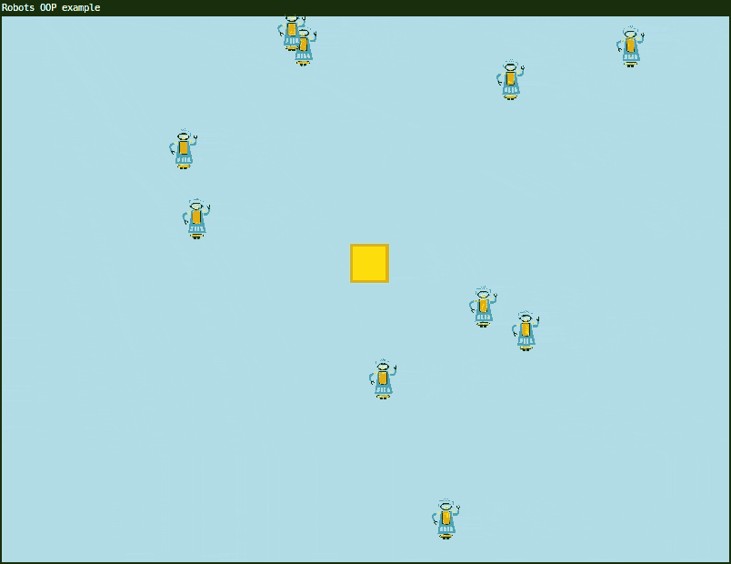
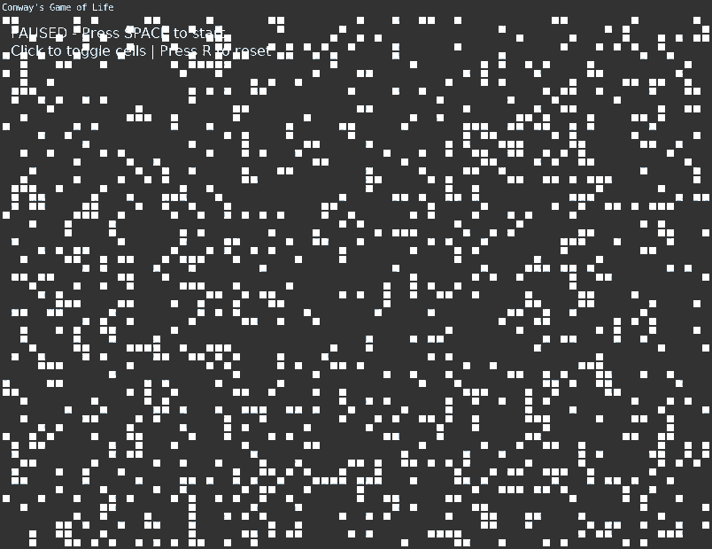

Date: 2026-10-12
New media art self-consciously reworks technology into culture, and rereads technology as culture. What’s more, it does so in a concrete, applied way; it manipulates the technology itself, with a nonindustrial latitude that admits misapplication and adaptation, rewiring and hacking, pseudofunctionality and accident. p.5, Metacreation
A-life begins with a notion of life that is wholly materialistic, involving no soul, vital force, or essence. In the words of the convenor of the first artificial life workshop, Christopher Langton, ‘Living organisms are nothing more that complex biochemical machines.’ Langton contends that rather than being any special substance or force, life is ‘a property of the organization of matter.’ Further, this organization is not simply a complex structure but a dynamic structure, a system active in real time: for a-life, life is most importantly manifest in behavior. p.7, Metacreation
We are no longer creating a work, we are creating creation…We are able to bring forth…results…which go beyond the intentions of their originators, and this in infinite number. – Nicholas Schöffer p.16, Metacreation
This object-oriented programming example demonstrates two different Lua patterns - classes with metatables (Robot) and simple tables with methods (box). It consists of a Robot class definition and simple box object.
The box object demonstrates a simpler object-oriented structure of a table with methods. Lua’s power of first-class functions is represented here.
A first-class function means they can be:
box
table)display = function(self) ... end)The box object demonstrates this with
display and move functions stored
as values in the box, just like x,
y and size are numbers.
The Robot demonstrates uses of metatables.
Robot.__index = Robot sets up the
metatablesetmetatable(robot, Robot) links each
instance to the Robot tablerobot:move(), Lua
looks in the Robot table to find the move
functionAdvanced ways to extend the program:

require("L5")
-- Note: The Robot class definition below could be moved to a separate file robot.lua
-- and then loaded with: local Robot = require("robot")
Robot = {}
Robot.__index = Robot -- Tells Lua to use Robot's metatable to find methods
-- Global vars
robots = {} -- Table to hold all robot instances
robotImg = nil
function setup()
size(800, 600)
windowTitle("Robots OOP example")
robotImg = loadImage("assets/robot.png")
imageMode(CENTER)
rectMode(CENTER)
strokeWeight(3)
fill("gold")
stroke("goldenrod")
-- Initialize box position
box.x = random(width)
box.y = random(height)
-- Create 10 robots
for i = 1, 10 do
table.insert(robots, Robot:new())
end
describe('Random robots moving around the screen. They steal the yellow box when they overlap with it.')
end
function draw()
background("lightblue")
-- Update and draw box
box:move()
box:display()
-- Update and draw all robots
for i = 1, #robots do
robots[i]:move()
robots[i]:display()
end
end
-- Robot class definition
function Robot:new(x, y, w, h)
local robot = {
x = x or random(width),
y = y or random(height),
w = w or 70,
h = h or 70,
xspeed = random(-2, 2),
yspeed = random(-2, 2)
}
setmetatable(robot, Robot) -- Links the instance to Robot class
return robot
end
function Robot:move()
self.x = self.x + self.xspeed
self.y = self.y + self.yspeed
-- Bounce off walls
if self.y > height or self.y < 0 then
self.yspeed = self.yspeed * -1
end
if self.x > width or self.x < 0 then
self.xspeed = self.xspeed * -1
end
end
function Robot:display()
image(robotImg, self.x, self.y, self.w, self.h)
end
-- Box object using simple table with methods
-- Demonstrates first-class functions stored as table values
box = {
x = nil, -- Initialized in setup() after random() is seeded
y = nil,
size = 40,
display = function(self)
square(self.x, self.y, self.size)
end,
move = function(self)
-- Teleport to nearest robot if close enough
for i = 1, #robots do
if dist(self.x, self.y, robots[i].x, robots[i].y) < self.size then
self.x = robots[i].x
self.y = robots[i].y
break
end
end
end
}Stephen Hawkings The Meaning of Life (John Conway’s Game of Life segment)
Inventing Game of Life (John Conway) - Numberphile
from p5.js examples - Game of Life
More explorations with Multiple Neighborhoods Cellular Automata by softology
require 'L5'
local block = 10
local chance = 0.01
local dead = 'black'
local alive = 170
function setup()
--fullscreen(2)
gridwidth = floor(width/block)
gridheight = floor(height/block)
createGrid()
textAlign(LEFT,TOP)
--initial grid draw
for y=1,gridheight do
for x=1,gridwidth do
if grid[y][x] == 1 then
fill(alive)
else
fill(dead)
end
square(x*block-block,y*block-block,block)
end
end
createNewGrid()
--frameRate(15)
windowTitle('Inkblot')
describe('an inkblot algorithm, like a simpler Game of Life. Cells replicate like ever-expanding ink.')
end
function draw()
background(dead)
--new grid
for y=1,gridheight do
for x=1,gridwidth do
if newGrid[y][x] == 1 then
fill(0,alive+random(-10,10),0)
-- fill(0,alive,0)
square(x*block-block,y*block-block,block)
else
fill(dead)
end
-- square(x*block-block,y*block-block,block)
end
end
grid = newGrid
createNewGrid()
end
function createGrid()
grid = {}
for y=1,gridheight do
grid[y] = {}
for x=1,gridwidth do
--grid[y][x] = floor(random(2))
if random() < chance then
grid[y][x] = 1
else
grid[y][x] = 0
end
end
end
end
function createNewGrid()
newGrid = {}
for y=1,gridheight do
newGrid[y] = {}
for x=1,gridwidth do
local neighbors = 0
if checkNeighbor(y-1,x-1) then neighbors = neighbors + 1 end
if checkNeighbor(y-1,x) then neighbors = neighbors + 1 end
if checkNeighbor(y-1,x+1) then neighbors = neighbors + 1 end
if checkNeighbor(y,x-1) then neighbors = neighbors + 1 end
if checkNeighbor(y,x) then neighbors = neighbors + 1 end
if checkNeighbor(y,x+1) then neighbors = neighbors + 1 end
if checkNeighbor(y+1,x-1) then neighbors = neighbors + 1 end
if checkNeighbor(y+1,x) then neighbors = neighbors + 1 end
if checkNeighbor(y+1,x+1) then neighbors = neighbors + 1 end
if neighbors == 3 or checkNeighbor(y,x) then
newGrid[y][x] = 1
--print(x..' '..y)
end
end
end
end
function checkNeighbor(_y,_x)
if grid[_y] ~= nil and grid[_y][_x] ~= nil then
if grid[_y][_x] == 1 then
return true
else
return false
end
else
return false
end
end
function mouseMoved()
local cx = ceil(mouseX/block)
local cy = ceil(mouseY/block)
if cy < 1 then cy = 1 end
newGrid[cy][cx] = 1
end
function mousePressed()
createGrid()
createNewGrid()
endThis example implements the famous Game of Life devised by British mathematician John Conway.
It is an example of a zero-player game, where after setting initial rules the simulation plays out algorithmically on its own without need for human intervention.
The original game as devised by Conway was for pen and gridded paper. Starting with any combination of cells in the grid either filled in (alive) or not (dead), the following rules were applied:
There are now hundreds of implementations in many programming languages. The game of life is an example of cellular automata. Techniques are explored in a variety of applicatons including game design, studying biology, chemistry, physics, music, and computer science.
This program implements a basic version of the simulation. Press space bar to begin. You can click on individual cells to toggle their state, or draw directly on the grid. Pressing ‘r’ resets and pauses the game.

require("L5")
-- Conway's Game of Life in L5
-- Click to toggle cells, press SPACE to pause/unpause, press R to reset
local cols, rows
local cellSize = 10
local grid = {}
local nextGrid = {}
local paused = true
function setup()
size(800, 600)
windowTitle("Conway's Game of Life")
frameRate(10)
-- Calculate grid dimensions
cols = floor(width / cellSize)
rows = floor(height / cellSize)
-- Initialize grids
initGrid()
describe("Conway's Game of Life. Click to toggle cells. Press SPACE to start/pause. Press R to reset.")
end
function initGrid()
-- Create empty grids
for i = 1, cols do
grid[i] = {}
nextGrid[i] = {}
for j = 1, rows do
grid[i][j] = 0
nextGrid[i][j] = 0
end
end
-- Add initial random cells
for i = 1, cols do
for j = 1, rows do
if random(1) < 0.2 then
grid[i][j] = 1
end
end
end
end
function draw()
background(20)
-- Draw grid
for i = 1, cols do
for j = 1, rows do
local x = (i - 1) * cellSize
local y = (j - 1) * cellSize
if grid[i][j] == 1 then
fill(255)
else
fill(50)
end
stroke(30)
strokeWeight(1)
rect(x, y, cellSize, cellSize)
end
end
-- Update grid if not paused
if not paused then
computeNextGeneration()
end
-- Draw status text
fill(255)
noStroke()
textSize(16)
textAlign(LEFT, TOP)
local status = paused and "PAUSED - Press SPACE to start" or "RUNNING - Press SPACE to pause"
text(status, 10, 10)
text("Click to toggle cells | Press R to reset", 10, 30)
end
function keyPressed()
-- Toggle pause with spacebar
if key == 'space' then
paused = not paused
end
-- Reset with R
if key == 'r' then
initGrid()
paused = true
end
end
function computeNextGeneration()
-- Calculate next generation
for i = 1, cols do
for j = 1, rows do
local neighbors = countNeighbors(i, j)
-- Conway's rules:
-- 1. Any live cell with 2-3 neighbors survives
-- 2. Any dead cell with exactly 3 neighbors becomes alive
-- 3. All other cells die or stay dead
if grid[i][j] == 1 then
-- Cell is alive
if neighbors == 2 or neighbors == 3 then
nextGrid[i][j] = 1
else
nextGrid[i][j] = 0
end
else
-- Cell is dead
if neighbors == 3 then
nextGrid[i][j] = 1
else
nextGrid[i][j] = 0
end
end
end
end
-- Copy next generation to current grid
for i = 1, cols do
for j = 1, rows do
grid[i][j] = nextGrid[i][j]
end
end
end
function countNeighbors(x, y)
local count = 0
-- Check all 8 neighbors
for i = -1, 1 do
for j = -1, 1 do
-- Skip the center cell
if not (i == 0 and j == 0) then
-- Wrap around edges (toroidal topology)
local col = ((x - 1 + i) % cols) + 1
local row = ((y - 1 + j) % rows) + 1
count = count + grid[col][row]
end
end
end
return count
end
function mousePressed()
-- Toggle cell on click
local col = floor(mouseX / cellSize) + 1
local row = floor(mouseY / cellSize) + 1
if col >= 1 and col <= cols and row >= 1 and row <= rows then
if grid[col][row] == 0 then
grid[col][row] = 1
else
grid[col][row] = 0
end
end
end
function mouseDragged()
-- Allow drawing by dragging
local col = floor(mouseX / cellSize) + 1
local row = floor(mouseY / cellSize) + 1
if col >= 1 and col <= cols and row >= 1 and row <= rows then
grid[col][row] = 1
end
end